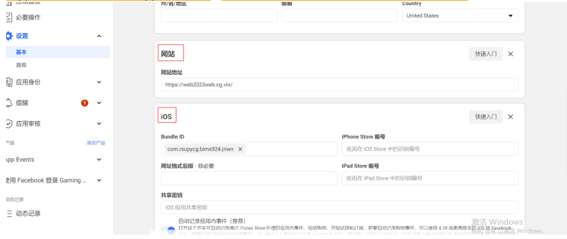
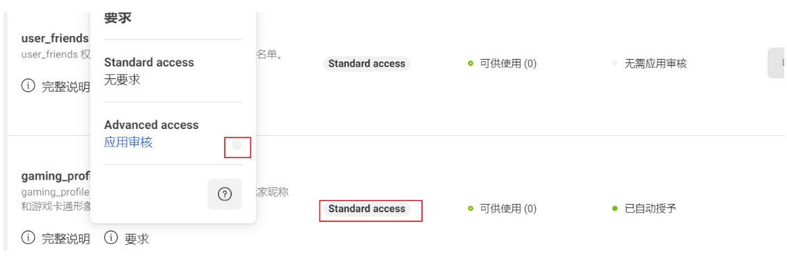
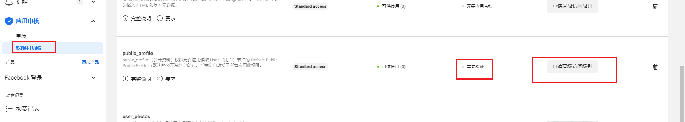
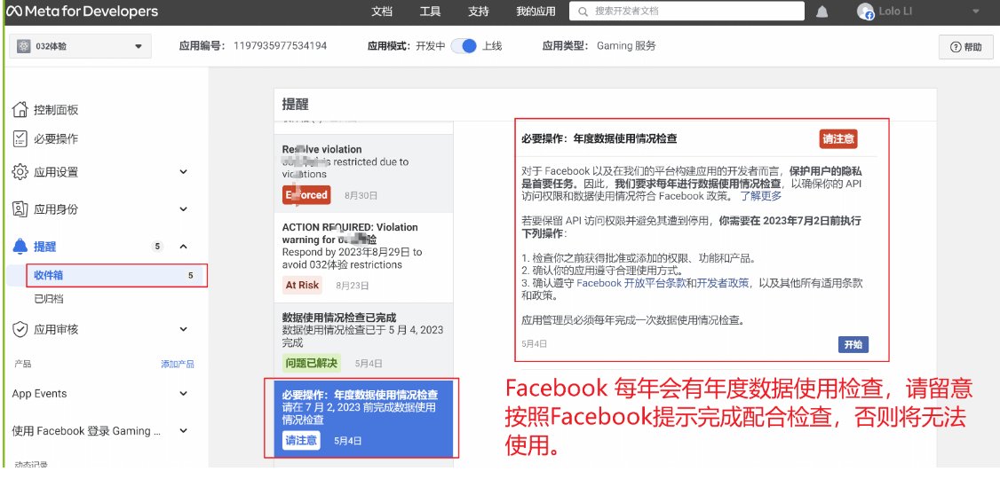
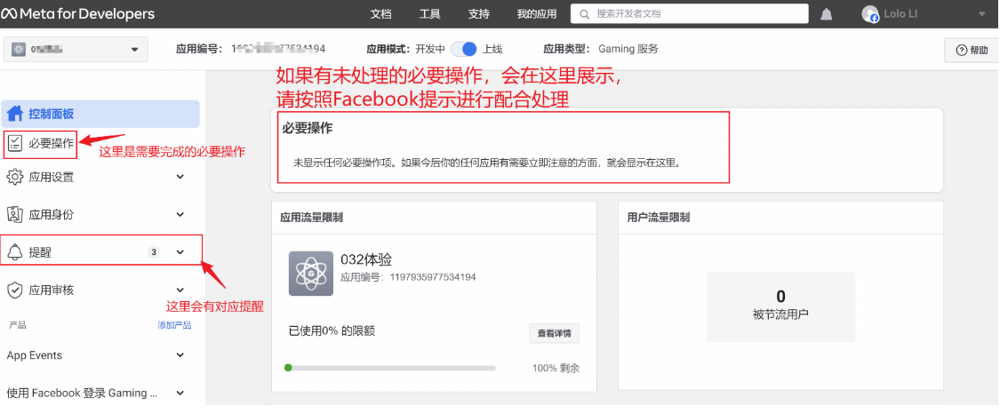
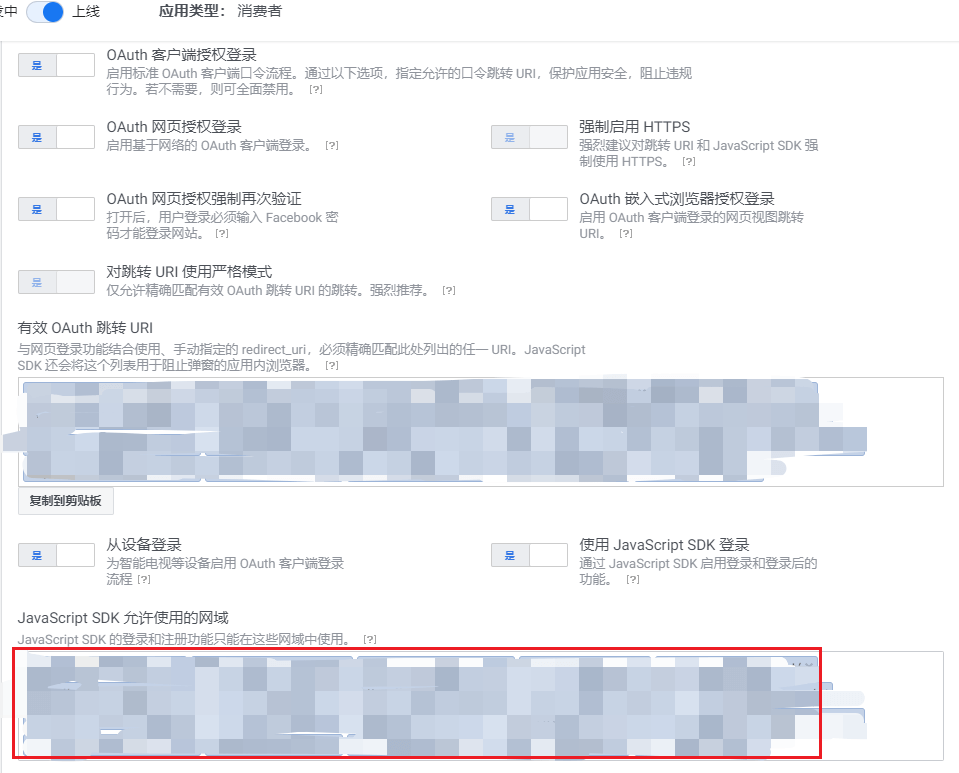
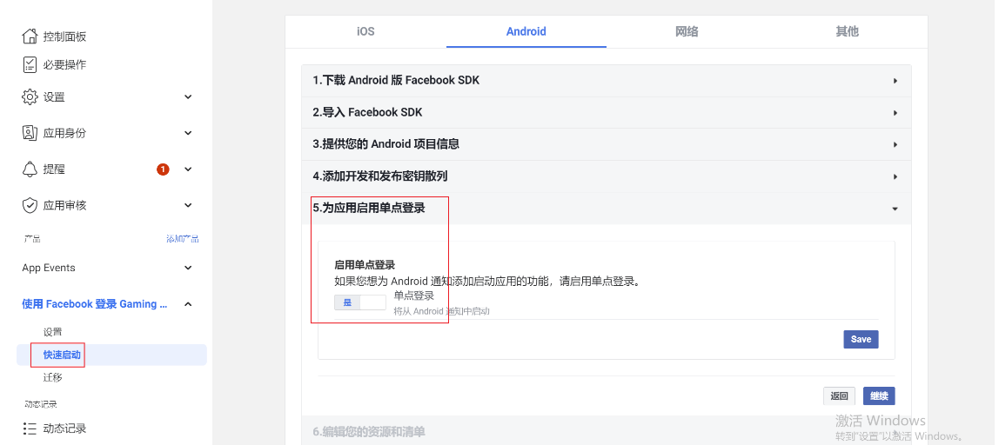

Facebook快捷登录常见问题处理：
1.跳转到登陆显示“功能不可用”，需要先检查 saas后台的fb配置 与 fb后台的应用id和secret是否一致 ，如果不一致，需要配置成一样的
app端需要在后台重新打包app，web不用，如果一致，则需要去fb的后台检查登陆配置是否出错；

在基本项中检查是否配置有 网站登陆，ios登陆，安卓登陆。没有的需要补上，详情配置见上方教程步骤10；
2.如果以上还是不行，就需要登录开发者后台看看应用审核部分是否获得高级权限（若下图1和图2），如果已获取则是配置问题，检验web，ios，android配置是否有遗漏：

检查public_profile 权限的访问级别和状态是否是 Advanced access 绿色，灰色 Standard access则需要放置2周等待fb审核，新账号都需放置2周。

如果2周内状态变为，需要验证，点下图，红色框内需要验证，跳转到公司验证，根据提示验证即可

3.正常使用的Facebook登录，突然无法使用，可能是没有配合Facebook做年度数据检查，请登录Facebook后台，检查处理：


注意点：
1.若有有多个域名，需要把所有域名发来，在 JavaScript SDK 允许使用的网域中都加上，记得保存

2.跳转到登陆显示“应用未启用”，出现这样的基本上是fb后台的应用id和secret 与 SaaS后台的fb配置不匹配，需要到FB后台走一遍配置流程
3.有时候配置正确web端能正常跳转，app端却不能，需要到fb后台看一下这里的 单点登陆设置为true
